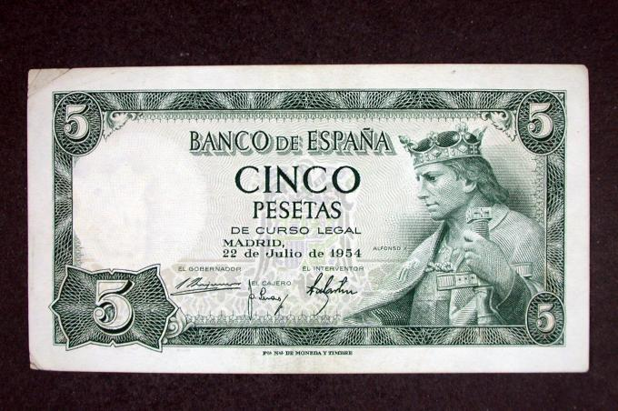

Introducción.
En este mundo globalizado todos estamos conectados, cada día consumimos energía, alimentos, servicios, materias primas y productos de diversa procedencia. Por eso, debemos tomar conciencia de nuestro papel en la economía local, regional y mundial cada vez que decidimos consumir un producto, un servicio, una camiseta un refresco o cualquier otra cosa el resto del mundo se ve afectado por nuestras decisiones de consumo.
En esta Situación de Aprendizaje vamos a ver como funcionan los distintos sectores productivos, como actuamos nosotros y nuestras familias consumiendo y produciendo en esta economía global en la que todos estamos inmersos.
Billete
